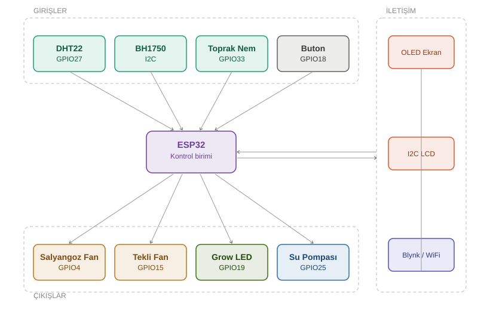

Bitkilerin en sağlıklı şekilde gelişmesini sağlarken, kullanıcı sağlığını alerjen korumasıyla ön planda tutan, ESP32 tabanlı otonom bir izolasyon kabinidir. Sistem; sıcaklık, nem, hava kalitesi (polen) ve ışık şiddetini yüksek doğrulukla kontrol eder.

// Kod bloğun burada aynen duruyor...